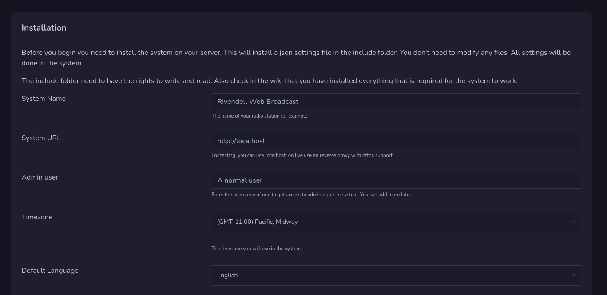

Install Rivendell Web Broadcast

The installation of the system is simple, but before you install your system, you need to have all the requirements for your server.
Info
This guide is for Debian based system
Install Dependencies
Apache
Normally apache is installed during installation of Rivendell, but if not, you need to install it with following command:
sudo apt install apache2 -y
mod_rewrite
To be able to use the system you need apache modrewrite installed. This is done by enable the apache module:
sudo a2enmod rewrite
Then you need to make changes in your apache config to allow .htaccess files:
Open up config file : sudo nano /etc/apache2/apache2.conf
Go and make sure that directory /var/www is set to AllowOverride All
PHP
This is developed to work with PHP version 8 but will work on version 7 also.
Install php with following:
sudo apt install php php-{common,mysql,xml,xmlrpc,curl,gd,imagick,cli,dev,imap,mbstring,opcache,soap,zip,intl,pdo} -y
This will install PHP and modules that are common and needed.
Also make some adjustments in php.ini file that you will find in /etc/php/8.2/apache2 folder (replace 8.2 with the version number for your php)
Some suggestions: max_execution_time 180 memory_limit 128M post_max_size 200M upload_max_filesize 200M max_input_time 60 max_input_vars 3000
If you have problems load audio files or upload, you need to adjust these more.
Now restart apache: sudo systemctl restart apache2
FFMPEG
For the moment we use FFMPEG to get the length of the audio files, this will be removed in the future, but for now you need to install FFMPEG on your server:
sudo apt install ffmpeg
Install System
Now we are going to install the system on your server. This must be done on a server that has Rivendell installed.
Start by login to root user: su -l
Go to apache folder: cd /var/www/html and remove the index file: rm index.html
Stable versions
A release file is "more stable" than the "github" code, when we update the version number we release a new release. This can contain less bugs, than clone the github code. And we recommend this way.
Download the latests release and extract it inside the /var/www/html folder.
Development versions
If you want the latest changes in the system, Clone the github repository inside the html folder.
Warning
This is the development and changes a lot and can hold many bugs!
Data Folder
Chmod the data folder so it get read and write access. This folder store json settings files for the system, logeditor and password reset.
Reverse Proxy
It's recommended that you use reverse proxy with https access before you expose the machine on the world wide web. For testing you can use http://localhost
Audio recording needs https access to work, but they will work on localhost also.
Run the installer
Open up Rivendell Web Broadcast in your browser.
Pre check

The installation will first check your system to see that the most important parts is correct on your server. If everything looks good, you can continue, if it's not good, there will be a red warning on that part. Fix that and reload the page to start installation by pressing the next button that will be available.
Admin user
Under the admin user field you enter your or anyones username on rivendell with normal user access on rivendell. This user will get admin access to the web system.
Info
Rivendells Admin user can not be used in this system
Just enter one username now, you can add more later.
SMTP Settings
The SMTP settings are used to send out emails in the system and is required.
Updates
In the admin dashboard you will get information when a new release is avalible, This will only inform when there are new release on the release page on github.
To update just replace all files with the new updated, clear your catche and if needed there can be an update guide.
Cron job for backups
The system can make backups automatic on Rivendell MySQL database and also on Rivendell Web Broadcast data files. To do so you need to setup a cron job on you server.
Login as root and go in to crontab with crontab -e
Add for example following to do backup each midnight:
0 0 * * * curl -s http://localhost/api/backup.php > /dev/null
For this you need to have curl installed on your server.